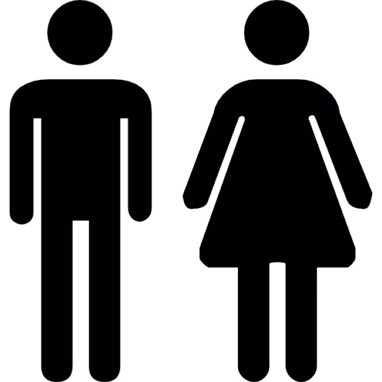

andar: Accion de mover las piernas
abordar: Acercarse a una persona
abandonar: Dejar solo, sin cuidados
abanico: Objeto que sirve para dar aire
abecedario: Conjunto de letras de un idioma
agradecimiento: Muestra de gratitud. Consiste en dar las gracias a una persona
bacteria: Organismo muy pequeño que puede producr enfermedades
baja: Documento en el que un medico confirma que alguien no posee las condiciones para realizar determinadas tareas
bondad: Carcaterística de las personas buenas
braille: Sistema de escritura en relieve
casa: Construcción para albergar personas
caballo: Animal mamífero de tamaño grande
cabildo: Conjunto de sacerdotes que son miembros de una catedral
ciudadano/a: Persona que vive en una ciudad
clara: Parte transparente o espesa del huevo
combustible: Sustancia que sirve para combustionar Ir a fueldación en pago: Acuerdo por el que una persona da su casa, cuando no puede pagar el prestamo para pagar la misma
debate: Discusión o intercambio de varias personas de opiniones
debilidad: Falta de fuerza o de resistencia
diamante: Piedra preciosa de color transparente
diagnotico: Reconocimiento de una enfermedad después de estudiar al paciente
e-mail: Correo electrónico
ecosistema: Sistema formado por un conjunto de seres vivos
edificante: Que es bueno como conportamiento y sirve como ejemplo
envidiar: Desear aquello que tienen otras personas
furia: Que te da mala leche
fabada: Comida típica de Asturias
fabricar: Hacer un producto a partir de otros o de varias piezas
galleta: Dulce que esta hecho con harina, azúcar y huevo
ganado: Grupo de animales domésticados que viven en el campo
gardenia: Arbusto de origen chino
garito: (Accede a la definición)
haba: Planta de huerta con semillas grandes
habichuela: Judía
habilidad: Cualidad de la persona que puede hacer las cosas bien
habitante: Persona que vive en un lugar
habituar: Acostumbrar a alguien a algo
hablar: Comunicarse con alguien, generalmente a través de la palabra
icono: Dibujo que tiene un parecido con el objeto que representa 
idea: Imagen o representación de algo o alguien en la mente
ignorante: Persona que ignora o desconoce algo
igualdad: Hecho o situacion en la que dos o mas personas o cosas son iguales en forma a sus características